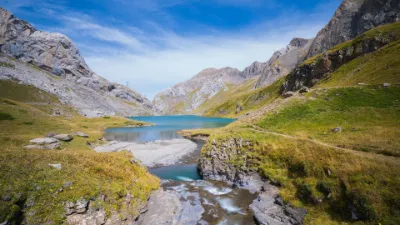

Aviso importante: Este sitio web es un recurso informativo independiente y no está afiliado ni asociado con el gobierno de México o cualquier entidad gubernamental oficial. La información proporcionada tiene fines educativos e informativos únicamente.
Las 5 rutas turísticas más espectaculares para recorrer México en coche

México es un país de contrastes, con una geografía diversa que va desde desiertos y montañas hasta selvas tropicales y playas paradisíacas. Recorrer sus carreteras es una de las mejores formas de descubrir su riqueza cultural, gastronómica y paisajística. En este artículo, te presentamos cinco rutas turísticas que te permitirán conocer lo mejor de México desde la libertad que ofrece viajar en automóvil.
1. La Ruta de los Cenotes (Península de Yucatán)
Recorrido
Esta ruta se extiende por aproximadamente 140 kilómetros desde Cancún hasta Valladolid, atravesando el corazón de la Riviera Maya y adentrándose en la selva yucateca.
Principales atracciones
- Cenote Dos Ojos: Uno de los sistemas de cuevas subacuáticas más extensos del mundo, ideal para snorkel y buceo.
- Cenote Azul: De aguas cristalinas y a cielo abierto, perfecto para nadar.
- Cenote Ik Kil: Cerca de Chichén Itzá, con impresionantes formaciones y cascadas naturales.
- Gran Cenote: Con áreas para nadadores de todos los niveles y fascinantes formaciones de estalactitas.
- Cenote Suytun: Famoso por su plataforma circular en el centro y el espectacular rayo de luz que penetra desde el techo.
Consejos prácticos
- La mejor época para recorrer esta ruta es entre noviembre y abril, cuando hay menos lluvias y el clima es más agradable.
- Lleva contigo traje de baño, toalla, repelente biodegradable y protector solar (también biodegradable para no contaminar los cenotes).
- Muchos cenotes cobran entrada (entre 80 y 500 pesos mexicanos), así que prepara efectivo.
- Las carreteras están en buen estado, pero es recomendable viajar de día.
- Combina esta ruta con visitas a zonas arqueológicas como Tulum o Chichén Itzá.
2. La Ruta del Tequila (Jalisco)
Recorrido
Esta ruta de aproximadamente 200 kilómetros atraviesa el estado de Jalisco, partiendo desde Guadalajara y recorriendo el paisaje agavero, declarado Patrimonio de la Humanidad por la UNESCO.
Principales atracciones
- Tequila: El pueblo mágico que da nombre a la famosa bebida, donde puedes visitar destilerías como José Cuervo y Sauza.
- Amatitán: Considerado por muchos como el verdadero origen del tequila, con destilerías tradicionales.
- Paisaje Agavero: Impresionantes campos de agave azul que se extienden hasta el horizonte.
- Magdalena: Pueblo conocido por su obsidiana y artesanías.
- Teuchitlán: Donde se encuentra la zona arqueológica de Guachimontones, con sus peculiares pirámides circulares.
Consejos prácticos
- Si planeas visitar varias destilerías, considera contratar un conductor designado o un tour organizado.
- La ruta se puede recorrer en cualquier época del año, aunque de junio a septiembre es temporada de lluvias.
- Reserva con anticipación los tours en las destilerías más populares, especialmente en temporada alta.
- No olvides probar la gastronomía local, como la birria, el pozole y las tortas ahogadas.
- El Tequila Express y el José Cuervo Express son trenes turísticos que complementan la experiencia si prefieres no conducir.
3. La Ruta de la Sierra Gorda (Querétaro)
Recorrido
Esta ruta de aproximadamente 250 kilómetros atraviesa la Reserva de la Biosfera Sierra Gorda en el estado de Querétaro, ofreciendo una combinación única de naturaleza, historia y cultura.
Principales atracciones
- Misiones Franciscanas: Cinco misiones del siglo XVIII declaradas Patrimonio de la Humanidad, incluyendo la espectacular de Jalpan de Serra.
- Puente de Dios: Impresionante cenote de agua turquesa en medio de la selva.
- Sótano de las Golondrinas: Una de las cavernas más profundas del mundo, donde miles de aves realizan espectaculares vuelos en espiral.
- Pinal de Amoles: Pueblo de montaña con impresionantes vistas panorámicas.
- Cascada de Chuveje: Hermosa caída de agua con pozas naturales para nadar.
Consejos prácticos
- Las carreteras son sinuosas y atraviesan montañas, por lo que se recomienda un vehículo en buen estado y conducir con precaución.
- La mejor época para visitar es entre octubre y mayo, evitando la temporada de lluvias cuando pueden ocurrir deslaves.
- Lleva ropa y calzado adecuados para caminatas, así como traje de baño para disfrutar de los cuerpos de agua.
- La señal de celular es limitada en muchas áreas, descarga mapas offline.
- Planifica bien tu ruta y reserva alojamiento con anticipación, ya que las opciones son limitadas en algunas zonas.
4. La Ruta de la Costa del Pacífico (Baja California)
Recorrido
Esta espectacular ruta recorre la península de Baja California de norte a sur por la carretera federal 1, desde Tijuana hasta Cabo San Lucas, cubriendo aproximadamente 1,700 kilómetros.
Principales atracciones
- Ensenada: Ciudad costera conocida por La Bufadora, un géiser marino natural, y su excelente gastronomía.
- Valle de Guadalupe: La región vinícola más importante de México, con más de 100 bodegas.
- Bahía de los Ángeles: Paraíso para avistamiento de ballenas y vida marina.
- Oasis de San Ignacio: Palmeral en medio del desierto con una misión histórica.
- Loreto: Pueblo mágico con el Parque Nacional Bahía de Loreto, ideal para actividades acuáticas.
- La Paz: Capital de Baja California Sur, famosa por la playa Balandra y el nado con tiburón ballena.
- Los Cabos: Destino turístico de clase mundial con playas espectaculares y formaciones rocosas como El Arco.
Consejos prácticos
- Esta es una ruta extensa que idealmente debería planearse para al menos 10-14 días.
- Verifica el estado de tu vehículo antes de partir y lleva un kit de emergencia, ya que hay tramos largos sin servicios.
- Llena el tanque de gasolina cuando tengas oportunidad, las estaciones pueden estar muy separadas.
- La mejor época es de octubre a mayo; evita el verano por las altas temperaturas.
- Lleva suficiente agua potable, especialmente en los tramos desérticos.
- Para cruzar a Baja California desde EE.UU., necesitarás un permiso temporal de importación para tu vehículo.
5. La Ruta Puuc (Yucatán)
Recorrido
Esta ruta arqueológica de aproximadamente 100 kilómetros recorre varios sitios mayas en el sur del estado de Yucatán, caracterizados por el estilo arquitectónico Puuc.
Principales atracciones
- Uxmal: El sitio más importante de la ruta, con la impresionante Pirámide del Adivino y el Cuadrángulo de las Monjas.
- Kabah: Conocido por el Palacio de los Mascarones, con cientos de representaciones del dios Chaac.
- Sayil: Con su Gran Palacio de tres niveles y estructuras bien conservadas.
- Xlapak: El sitio más pequeño de la ruta, con un palacio decorado con mascarones.
- Labná: Famoso por su arco maya y su elaborada fachada.
- Grutas de Loltún: Impresionante sistema de cuevas con evidencia de ocupación humana de más de 10,000 años.
Consejos prácticos
- La ruta se puede recorrer en un día, pero es recomendable dedicarle dos para disfrutar con calma cada sitio.
- Visita los sitios temprano en la mañana o al final de la tarde para evitar el calor intenso.
- Lleva sombrero, protector solar, repelente de insectos y suficiente agua.
- Considera hospedarte en Uxmal o en la cercana ciudad de Mérida.
- Existe un boleto combinado que te permite acceder a todos los sitios de la ruta a un precio reducido.
- Complementa tu visita con paradas en los pueblos mágicos cercanos como Maní o Ticul.
Preparativos generales para viajar por carretera en México
Documentación y seguros
- Lleva siempre tu licencia de conducir vigente, tarjeta de circulación y comprobante de seguro.
- Si viajas con un vehículo extranjero, asegúrate de tener los permisos necesarios.
- Contrata un seguro de auto con cobertura amplia que incluya asistencia en carretera.
- Considera un seguro de viaje que cubra emergencias médicas.
Seguridad
- Infórmate sobre la situación de seguridad en las zonas que planeas visitar.
- Viaja preferentemente de día y por carreteras principales o de cuota.
- Evita mostrar objetos de valor o grandes cantidades de dinero.
- Utiliza estacionamientos vigilados cuando sea posible.
- Mantén a alguien informado sobre tu itinerario y puntos de contacto.
Aspectos prácticos
- Descarga aplicaciones útiles como Google Maps, Waze o Maps.me con mapas offline.
- Considera adquirir una tarjeta IAVE para pagar casetas de peaje electrónicamente.
- Lleva un botiquín de primeros auxilios, linterna, cables para pasar corriente y herramientas básicas.
- Mantén a mano números de emergencia: 911 (emergencias generales), 078 (Ángeles Verdes para asistencia en carretera).
Conclusión
Viajar por carretera en México es una experiencia incomparable que te permite descubrir la inmensa diversidad del país a tu propio ritmo. Desde los cenotes mágicos de Yucatán hasta los viñedos de Baja California, pasando por las montañas de la Sierra Gorda y los sitios arqueológicos mayas, cada ruta ofrece paisajes únicos y experiencias culturales enriquecedoras.
Con una planificación adecuada, medidas de seguridad básicas y espíritu aventurero, recorrer México en automóvil se convertirá en una de tus experiencias de viaje más memorables. ¡Prepara tu mapa, llena el tanque y lánzate a descubrir las maravillas que este país tiene para ofrecer!
¿Has recorrido alguna de estas rutas o tienes alguna otra que recomendar? ¡Comparte tu experiencia y ayuda a otros viajeros a descubrir lo mejor de México!
Los mejores destinos para viajar por carretera en México

México es un país con una geografía privilegiada que ofrece infinidad de destinos ideales para explorar en automóvil. Desde playas paradisíacas hasta pueblos coloniales, pasando por impresionantes paisajes naturales, las opciones son tan diversas como fascinantes. En este artículo, te presentamos una selección de los mejores destinos para realizar un road trip por México, con información práctica para que puedas planificar tu próxima aventura sobre ruedas.
Destinos costeros
Riviera Nayarit
Este corredor turístico de más de 300 kilómetros en la costa del Pacífico ofrece una combinación perfecta de playas vírgenes, pueblos pintorescos y lujo discreto.
- Qué ver: Sayulita (pueblo surfero con ambiente bohemio), San Pancho (tranquilo y familiar), Punta Mita (exclusivo y elegante), Bucerías (auténtico pueblo pesquero).
- Mejor época: Noviembre a abril, cuando el clima es seco y agradable.
- Ruta recomendada: Partiendo de Puerto Vallarta, recorrer la carretera 200 hacia el norte, deteniéndose en los diferentes pueblos costeros.
Costa de Oaxaca
Una de las costas más espectaculares y menos desarrolladas de México, ideal para quienes buscan un contacto más auténtico con la naturaleza y la cultura local.
- Qué ver: Puerto Escondido (paraíso surfero), Mazunte (ecoturismo y observación de tortugas), Zipolite (playa nudista con ambiente relajado), Huatulco (bahías protegidas con aguas cristalinas).
- Mejor época: Octubre a abril, especialmente noviembre para el Día de Muertos en Pátzcuaro o enero-febrero para las mariposas monarca.
- Ruta recomendada: Seguir la carretera costera 200 desde Salina Cruz hasta Puerto Escondido, con paradas en las diferentes playas y pueblos.
Península de Baja California
Una franja de tierra entre el Océano Pacífico y el Mar de Cortés que ofrece paisajes desérticos, playas vírgenes y una extraordinaria biodiversidad marina.
- Qué ver: Ensenada (región vinícola), Bahía de los Ángeles (avistamiento de ballenas), Loreto (pueblito colonial), La Paz (playas paradisíacas), Los Cabos (turismo de lujo).
- Mejor época: Octubre a mayo, evitando el intenso calor del verano.
- Ruta recomendada: Recorrer la Carretera Transpeninsular (Mex 1) de norte a sur, desde Tijuana hasta Cabo San Lucas.
Destinos coloniales y culturales
Ruta de la Independencia
Un recorrido por las ciudades y pueblos que fueron escenario de la lucha por la independencia de México, con una rica arquitectura colonial y tradiciones culturales.
- Qué ver: Dolores Hidalgo (cuna de la independencia), San Miguel de Allende (ciudad artística), Guanajuato (callejones y túneles), Querétaro (centro histórico).
- Mejor época: Todo el año, aunque septiembre es especial por las celebraciones de independencia.
- Ruta recomendada: Circuito que conecta estas ciudades históricas en el centro de México, comenzando en Querétaro y terminando en Dolores Hidalgo.
Pueblos Mágicos de Michoacán
Michoacán alberga numerosos Pueblos Mágicos que destacan por su belleza arquitectónica, tradiciones artesanales y manifestaciones culturales únicas.
- Qué ver: Pátzcuaro (tradiciones indígenas), Santa Clara del Cobre (artesanía en cobre), Tzintzuntzan (zona arqueológica), Angangueo (santuario de la mariposa monarca).
- Mejor época: Octubre a marzo, especialmente noviembre para el Día de Muertos en Pátzcuaro o enero-febrero para las mariposas monarca.
- Ruta recomendada: Circuito alrededor del Lago de Pátzcuaro, conectando los diferentes pueblos de la región.
Destinos naturales
Cascadas de Chiapas
El estado de Chiapas es famoso por sus impresionantes cascadas y selvas exuberantes, ofreciendo paisajes de ensueño para los amantes de la naturaleza.
- Qué ver: Cascadas de Agua Azul, Cascada de Misol-Ha, Cascadas El Chiflón, Parque Nacional Cañón del Sumidero.
- Mejor época: Noviembre a abril, durante la temporada seca cuando las cascadas tienen un color turquesa más intenso.
- Ruta recomendada: Partiendo de Tuxtla Gutiérrez, visitar el Cañón del Sumidero, continuar hacia San Cristóbal de las Casas, Ocosingo, Palenque y las diversas cascadas en el camino.
Desierto de Sonora
Para los aventureros que buscan paisajes diferentes, el desierto de Sonora ofrece una belleza árida y misteriosa, con formaciones rocosas, cactus gigantes y cielos estrellados impresionantes.
- Qué ver: Reserva de la Biosfera El Pinacate, Bahía de Kino, Puerto Peñasco, Álamos (pueblo colonial en medio del desierto).
- Mejor época: Octubre a marzo, evitando el calor extremo del verano.
- Ruta recomendada: Circuito desde Hermosillo, pasando por la costa del Mar de Cortés y adentrándose en las zonas desérticas protegidas.
Consejos prácticos para tu road trip por México
Planificación y logística
- Investiga a fondo tus destinos antes de partir, especialmente en cuanto a distancias, tiempos de conducción y disponibilidad de servicios.
- Reserva alojamiento con anticipación, especialmente en temporada alta o en destinos populares.
- Descarga mapas offline y aplicaciones como Google Maps, Waze o Maps.me para navegación sin internet.
- Planifica rutas alternativas en caso de cierres de carreteras o imprevistos.
Seguridad en carretera
- Viaja preferentemente de día, especialmente en zonas rurales o poco conocidas.
- Utiliza carreteras principales o de cuota (autopistas de peaje) cuando sea posible.
- Mantén siempre al menos medio tanque de gasolina, ya que en algunas zonas las gasolineras pueden estar muy distanciadas.
- Evita detenerte en lugares aislados o poco concurridos.
- Informa a alguien de confianza sobre tu itinerario y mantén contacto regular.
Documentación y trámites
- Lleva siempre contigo licencia de conducir vigente, tarjeta de circulación y comprobante de seguro del vehículo.
- Si viajas con un vehículo extranjero, asegúrate de tener los permisos necesarios.
- Ten a mano números de emergencia: 911 (emergencias generales), 078 (Ángeles Verdes para asistencia en carretera).
Conclusión
México es un destino ideal para los amantes de los viajes por carretera, ofreciendo una diversidad de paisajes, culturas y experiencias difícil de igualar. Desde las playas tropicales hasta los desiertos, pasando por montañas, selvas y ciudades coloniales, cada región del país tiene algo único que ofrecer al viajero sobre ruedas.
Con una buena planificación, medidas de seguridad básicas y espíritu aventurero, un road trip por México puede convertirse en una experiencia transformadora que te permitirá descubrir la verdadera esencia de este fascinante país. ¡Prepara tu mapa, llena el tanque y lánzate a la aventura!
Cómo preparar tu auto para un viaje largo y seguro

Emprender un viaje por carretera puede ser una experiencia emocionante y llena de aventuras, pero también requiere una preparación adecuada, especialmente en lo que respecta a tu vehículo. Un auto en óptimas condiciones no solo garantiza tu seguridad y la de tus acompañantes, sino que también te evita contratiempos que podrían arruinar tus vacaciones. En esta guía, te ofrecemos una lista completa de verificaciones y consejos para preparar tu auto antes de un viaje largo.
Verificaciones mecánicas esenciales
Sistema de frenos
Los frenos son quizás el componente más crítico para tu seguridad en carretera. Antes de un viaje largo, es fundamental verificar:
- Nivel y estado del líquido de frenos (debe cambiarse cada 2 años aproximadamente)
- Desgaste de las pastillas o balatas (si escuchas chirridos al frenar, es señal de que necesitan revisión)
- Estado de los discos de freno (no deben presentar surcos profundos o deformaciones)
- Funcionamiento del freno de mano o estacionamiento
Sistema de suspensión
Una suspensión en buen estado es crucial para el manejo, especialmente en carreteras mexicanas que pueden presentar irregularidades:
- Amortiguadores (si tu auto rebota excesivamente después de pasar un tope, probablemente necesiten reemplazo)
- Resortes y muelles (no deben estar rotos o deformados)
- Bujes y rótulas (juego excesivo en la dirección puede indicar desgaste)
- Alineación y balanceo (fundamentales para evitar desgaste irregular de llantas y mejorar la estabilidad)
Motor y sistemas asociados
El corazón de tu vehículo debe estar en perfectas condiciones para un viaje largo:
- Cambio de aceite y filtro (si estás cerca del intervalo de cambio, hazlo antes del viaje)
- Nivel y estado del refrigerante (crucial para evitar sobrecalentamiento)
- Correas y bandas (verificar que no presenten grietas o desgaste excesivo)
- Filtro de aire (un filtro sucio reduce la eficiencia del combustible)
- Bujías y cables (si tu auto tiene más de 60,000 km, considera reemplazarlos)
Sistema eléctrico
Quedarse sin batería en medio de la nada puede ser un verdadero problema:
- Estado de la batería (debe tener suficiente carga y los bornes limpios)
- Funcionamiento del alternador (verifica que cargue correctamente la batería)
- Sistema de luces completo (faros, direccionales, luces de freno, intermitentes de emergencia)
- Limpiaparabrisas y líquido lavador (fundamentales para mantener buena visibilidad)
Neumáticos: tu único contacto con el camino
Los neumáticos merecen una atención especial, ya que son el único punto de contacto entre tu vehículo y la carretera:
Presión de aire
- Verifica la presión con los neumáticos fríos (antes de conducir o después de al menos 3 horas de reposo)
- Sigue las recomendaciones del fabricante (generalmente indicadas en una etiqueta en la puerta del conductor o en el manual)
- Considera que para viajes largos con carga adicional, puede ser necesario aumentar ligeramente la presión (consulta el manual)
- No olvides verificar también la llanta de refacción
Profundidad del dibujo
- La profundidad mínima legal es de 1.6 mm, pero para viajes largos se recomienda al menos 3 mm
- Puedes verificar usando una moneda: si puedes ver la parte superior de la cabeza, es momento de cambiar los neumáticos
- Revisa que el desgaste sea uniforme (un desgaste irregular puede indicar problemas de alineación o suspensión)
Estado general
- Busca cortes, protuberancias o daños en las paredes laterales
- Verifica que no haya objetos incrustados en la banda de rodadura
- Revisa la fecha de fabricación (los neumáticos tienen una vida útil de aproximadamente 5 años, independientemente del desgaste)
Elementos de seguridad y emergencia
Además de la condición mecánica, es fundamental contar con elementos que te ayuden en caso de emergencia:
Kit básico de herramientas
- Gato hidráulico y llave de cruz para cambio de neumáticos
- Juego básico de destornilladores, llaves y pinzas
- Cables para pasar corriente
- Linterna con baterías adicionales
- Cinta aislante y de ducto (duct tape)
Elementos de seguridad obligatorios
- Triángulos reflectantes o luces de emergencia
- Chaleco reflectante
- Extintor de incendios (verifica que esté cargado y vigente)
- Botiquín de primeros auxilios
Elementos adicionales recomendados
- Compresor portátil para inflar neumáticos
- Kit de reparación de pinchazos
- Cuerdas o correas para remolque
- Mapas físicos como respaldo a los dispositivos electrónicos
- Bidón de agua potable
- Mantas térmicas (especialmente para viajes a zonas frías)
Preparación específica según el tipo de ruta
Dependiendo del tipo de viaje que planeas realizar, hay consideraciones adicionales:
Para rutas de montaña
- Verifica especialmente el sistema de frenos y la transmisión
- Considera llevar cadenas para neumáticos si hay posibilidad de nieve o hielo
- Asegúrate de que el motor esté bien afinado para compensar la menor densidad del aire en altitud
Para rutas desérticas o con altas temperaturas
- Presta especial atención al sistema de refrigeración
- Lleva agua adicional tanto para el vehículo como para los pasajeros
- Considera instalar protectores solares en las ventanillas
- Verifica el funcionamiento óptimo del aire acondicionado
Para rutas costeras
- Protege tu vehículo contra la corrosión causada por la sal
- Lleva equipo para lidiar con arena si planeas conducir en playas
- Verifica el funcionamiento de los limpiaparabrisas (la niebla costera puede reducir la visibilidad)
Consejos finales para un viaje sin contratiempos
Documentación
- Tarjeta de circulación vigente
- Comprobante de seguro (verifica cobertura para asistencia en carretera)
- Licencia de conducir vigente
- Manual del propietario del vehículo
- Información de contacto de asistencia vial
Planificación inteligente
- Investiga previamente dónde hay talleres mecánicos y gasolineras en tu ruta
- Descarga aplicaciones útiles como Waze, Google Maps o apps específicas de asistencia en carretera
- Planifica paradas cada 2 horas o 200 km para descansar y verificar el estado del vehículo
- Si es posible, realiza un viaje corto de prueba después de hacer ajustes o reparaciones importantes
Conclusión
Preparar adecuadamente tu vehículo antes de un viaje largo no solo es una cuestión de seguridad, sino también de tranquilidad. Dedicar unas horas a verificar y poner a punto tu auto puede ahorrarte días de contratiempos y gastos innecesarios durante tus vacaciones.
Recuerda que muchos talleres ofrecen servicios específicos de "revisión pre-viaje" que pueden ser una buena inversión si no tienes los conocimientos o herramientas para realizar todas las verificaciones por tu cuenta. Y si detectas cualquier problema o anomalía, es mejor resolverlo antes de partir que arriesgarte a una avería en plena carretera.
Con tu auto en óptimas condiciones, podrás concentrarte en lo verdaderamente importante: disfrutar del viaje y crear recuerdos inolvidables en las carreteras de México.
Cómo cruzar la frontera en auto: requisitos y consejos

Cruzar la frontera de México en automóvil hacia Estados Unidos o Guatemala puede ser una experiencia enriquecedora que te brinda flexibilidad y libertad durante tu viaje internacional. Sin embargo, también implica cumplir con una serie de requisitos legales y seguir procedimientos específicos. En esta guía completa, te explicamos todo lo que necesitas saber para cruzar la frontera en auto de manera segura y sin contratiempos.
Cruce fronterizo México-Estados Unidos
Documentación personal necesaria
- Pasaporte vigente: Es el documento principal requerido para ingresar a Estados Unidos.
- Visa estadounidense: Los ciudadanos mexicanos necesitan visa para ingresar a EE.UU. (B1/B2 para turismo o negocios).
- Permiso I-94: Formulario de entrada/salida que se tramita en línea o en la frontera (costo aproximado: 6 USD).
- Licencia de conducir vigente: Se recomienda contar con licencia internacional si planeas conducir extensivamente en EE.UU.
- Identificación oficial adicional: Como respaldo, es recomendable llevar tu INE o cédula profesional.
Documentación para el vehículo
- Tarjeta de circulación: Debe estar a nombre del conductor o contar con una carta poder notariada si el vehículo es prestado.
- Comprobante de seguro de auto válido en EE.UU.: La cobertura mexicana no es válida en territorio estadounidense.
- Permiso de importación temporal: No es necesario si permaneces en la zona fronteriza (hasta 25 millas de la frontera), pero sí para adentrarse más en territorio estadounidense.
- Comprobante de propiedad: Factura o título del vehículo, especialmente importante si el auto es nuevo.
Principales cruces fronterizos
Los cruces más utilizados entre México y Estados Unidos son:
- Tijuana-San Diego (San Ysidro/Otay): El cruce fronterizo más transitado del mundo.
- Mexicali-Calexico: Una alternativa menos congestionada para ingresar a California.
- Nogales-Nogales: Principal punto de cruce entre Sonora y Arizona.
- Ciudad Juárez-El Paso: Conecta Chihuahua con Texas.
- Nuevo Laredo-Laredo: Importante cruce comercial entre Tamaulipas y Texas.
- Reynosa-McAllen: Popular para viajeros del noreste de México.
- Matamoros-Brownsville: El cruce más oriental entre ambos países.
Proceso de cruce hacia Estados Unidos
- Prepara toda tu documentación con anticipación y tenla a mano.
- Espera en la fila de vehículos hasta llegar a la caseta de revisión.
- El oficial de CBP (Customs and Border Protection) te pedirá los documentos y hará preguntas sobre el motivo y duración de tu viaje.
- Es posible que inspeccionen tu vehículo, ya sea manualmente o con equipos de escaneo.
- Si todo está en orden, te permitirán el ingreso y te indicarán si necesitas tramitar algún permiso adicional.
Restricciones y prohibiciones
Está prohibido ingresar a Estados Unidos con:
- Frutas, verduras, plantas o semillas sin certificación.
- Carne, lácteos o productos de origen animal sin procesar.
- Drogas ilegales (incluyendo marihuana, aunque sea legal en algunos estados).
- Armas de fuego o municiones sin los permisos correspondientes.
- Más de 10,000 USD en efectivo sin declarar.
- Mercancía para venta comercial sin los permisos de importación.
Cruce fronterizo México-Guatemala
Documentación personal necesaria
- Pasaporte vigente: Aunque los ciudadanos mexicanos pueden ingresar con INE, se recomienda llevar pasaporte.
- Tarjeta de visitante regional: Opcional para mexicanos, facilita múltiples entradas.
- Licencia de conducir vigente: Es válida para conducir en Guatemala.
Documentación para el vehículo
- Tarjeta de circulación: Debe estar a nombre del conductor o contar con carta poder notariada.
- Permiso de importación temporal: Se tramita en la frontera (costo aproximado: 40 USD).
- Seguro de responsabilidad civil: Obligatorio para circular en Guatemala, se puede adquirir en la frontera.
- Comprobante de propiedad del vehículo: Factura o título.
Principales cruces fronterizos
Los cruces más utilizados entre México y Guatemala son:
- Ciudad Hidalgo-Tecún Umán: El más transitado, conecta Chiapas con el departamento de San Marcos.
- Talismán-El Carmen: Alternativa menos congestionada cerca de Tapachula.
- Ciudad Cuauhtémoc-La Mesilla: Conecta Chiapas con Huehuetenango.
Proceso de cruce hacia Guatemala
- En el lado mexicano, tramita tu salida en la oficina de migración.
- Cruza la frontera y dirígete a las oficinas de migración guatemalteca para registrar tu ingreso.
- Tramita el permiso temporal para tu vehículo en la aduana guatemalteca.
- Adquiere el seguro obligatorio si no lo has hecho previamente.
- Es posible que inspeccionen tu vehículo antes de permitir tu ingreso.
Consejos prácticos para cruces fronterizos
Antes del viaje
- Investiga los horarios de operación de los cruces fronterizos (algunos no operan 24 horas).
- Verifica las condiciones de tráfico y tiempos de espera (existen aplicaciones y sitios web que proporcionan esta información en tiempo real).
- Contrata un seguro de auto con cobertura internacional o adquiere una póliza específica para el país que visitarás.
- Realiza una revisión mecánica completa de tu vehículo.
- Limpia tu auto por dentro y por fuera para facilitar las inspecciones.
Durante el cruce
- Mantén una actitud respetuosa y cooperativa con los oficiales de migración y aduana.
- Responde con honestidad a todas las preguntas que te hagan.
- No uses el teléfono celular mientras esperas en la fila o durante la inspección.
- Mantén a la mano todos los documentos necesarios, pero no los entregues hasta que te los soliciten.
- Sigue todas las indicaciones de los oficiales durante la inspección del vehículo.
Consideraciones de seguridad
- Evita cruzar la frontera durante la noche, especialmente en puntos menos transitados.
- No lleves objetos de valor visibles dentro del vehículo.
- Mantén una copia digital de todos tus documentos importantes.
- Infórmate sobre las zonas de riesgo y evítalas en tu ruta.
- Considera viajar en caravana si es tu primera vez cruzando la frontera.
Regreso a México
Desde Estados Unidos
Al regresar a México desde Estados Unidos:
- Prepárate para posibles revisiones por parte de autoridades mexicanas.
- Respeta los límites de mercancía que puedes ingresar sin pagar impuestos (500 USD por persona por vía terrestre).
- Declara cualquier cantidad de dinero superior a 10,000 USD.
- Si llevaste tu vehículo con un permiso temporal a EE.UU., asegúrate de cancelarlo al regresar.
Desde Guatemala
Al regresar a México desde Guatemala:
- Cancela el permiso temporal de tu vehículo en la aduana guatemalteca antes de salir del país.
- Realiza tu trámite de ingreso en migración mexicana.
- Prepárate para una posible revisión de tu vehículo y equipaje.
- Respeta los límites de mercancía que puedes ingresar sin pagar impuestos.
Conclusión
Cruzar la frontera en automóvil requiere preparación y paciencia, pero ofrece una flexibilidad incomparable para tu viaje internacional. Con la documentación adecuada y siguiendo los procedimientos establecidos, el proceso puede ser relativamente sencillo y sin complicaciones.
Recuerda que las regulaciones pueden cambiar, por lo que es recomendable verificar la información más actualizada en los sitios oficiales de las autoridades migratorias y aduaneras antes de emprender tu viaje. Con la preparación adecuada, podrás disfrutar de la libertad de explorar los países vecinos con la comodidad de tu propio vehículo.
¿Has cruzado alguna vez la frontera en auto? ¡Comparte tu experiencia y ayuda a otros viajeros a prepararse para esta aventura internacional!